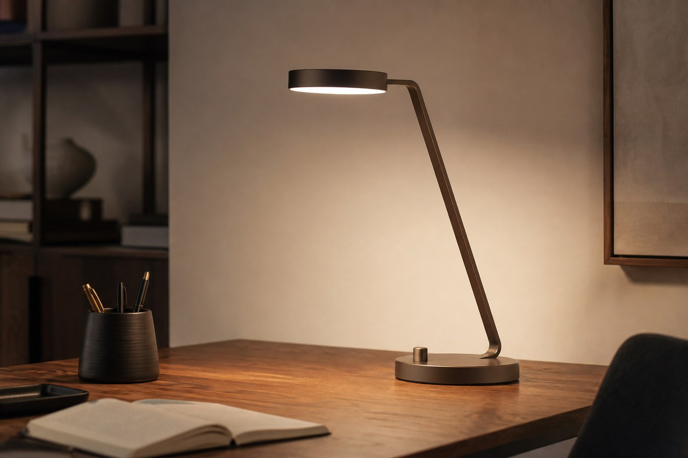
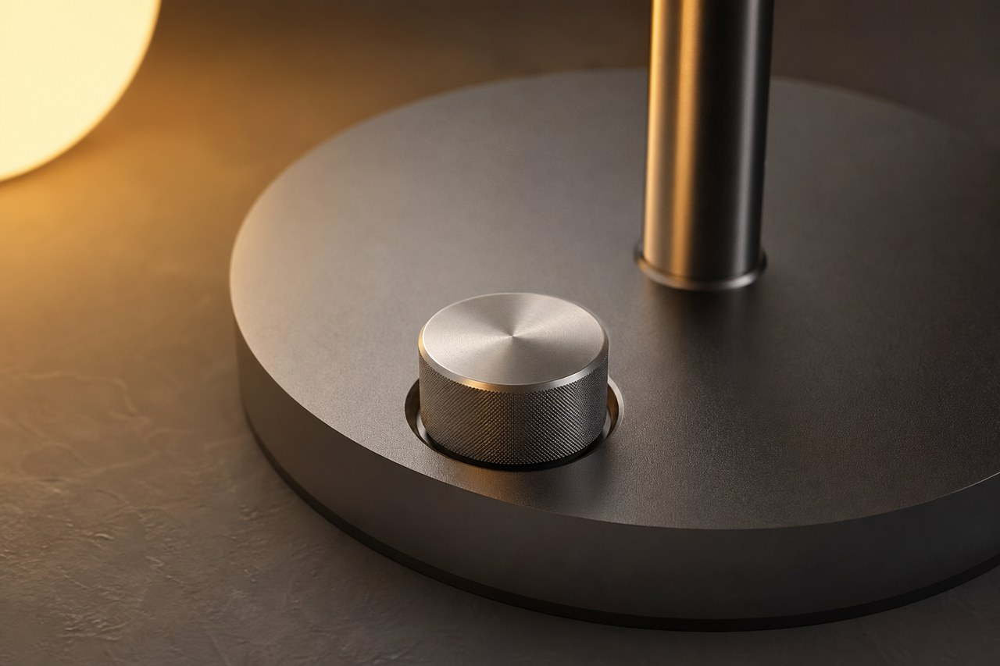
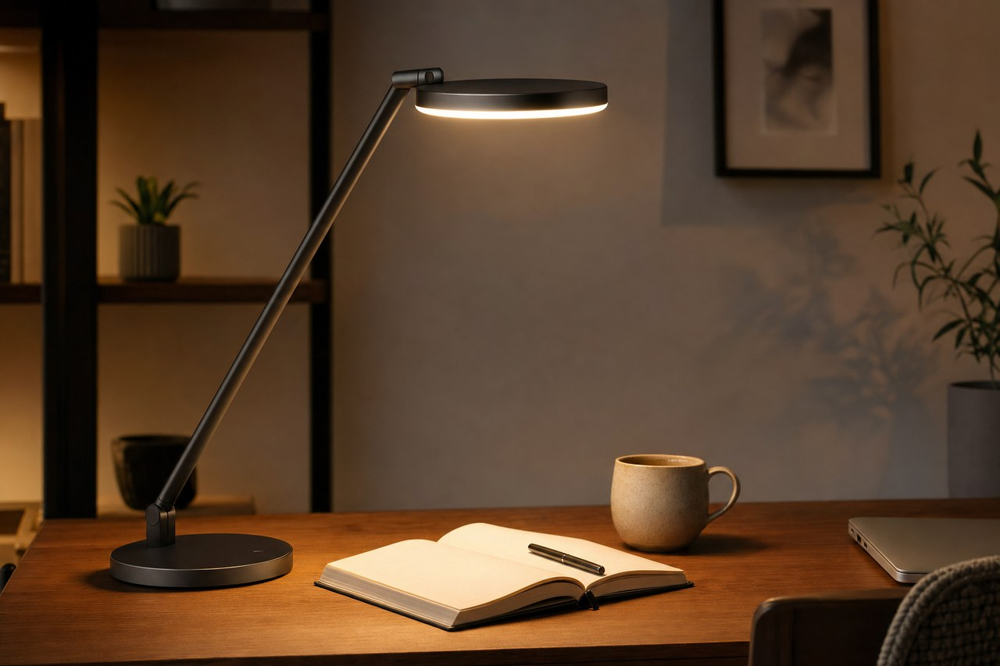

New desk setup essential
Calm Desk Lamp
$69.00
Designed to create softer focused light so you can read, write, and work without harsh glare. Perfect for compact desks, home offices, and evening routines.
Secure checkout available. Free shipping on orders over $75.



What makes it useful
Includes three brightness levels, a weighted base, and a fabric-wrapped cable. Made from powder-coated aluminium with a warm LED module. The lamp improves desk visibility while keeping a warmer room feel.
Dimensions: 38 cm high, 14 cm base diameter. Best for reading nooks, study desks, bedside tables, and small studio workspaces.
Why choose it
Unlike bright task lamps that feel clinical, this demo product balances focused light with a softer ambient glow.